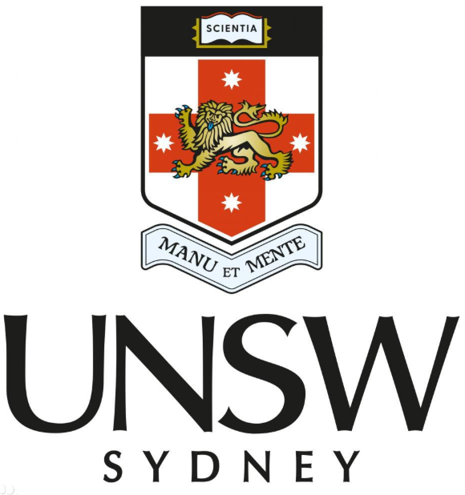

|
Jiaxin Wu (吴嘉鑫)
I am now a Ph.D. candidate in Data Science and Artificial Intelligence department at Guangdong University of Technology, advised by Prof. Jie Zhao. Interestingly, I have an interdisciplinary background. I obtained M.C. in Innovation & Entrepreneurship from University of New South Wales and B.S. in Mathematical Science from Tongji University.
My research focuses on leveraging Advanced AI to address various human-centric tasks, e.g., in recommender system and human healthcare. My works utilize human-centered design, diagnose the shortcomings of existing models, and develop AI-driven solutions to more responsibly and effectively satisify human needs in real life, with less labor effort and cost:
- Recommender System (RS): utilize LLMs and GCNs for list RS, generative RS, sequential RS, bundle RS, social RS, group RS, and cross-domain RS;
- Data Mining (DM): enhance model inputs by feature selection, multi-modal fusion, data-imbalance optimization, and data-missing supplementation;
- Music AI : combine NLP and deep learning for music generation, and interpretation;
- Voice Emotion for Robot : improve robot's voice emotion recognition, and voice emotion expression for huam-robot interaction;
- Trustworthy Natural Language Processing (NLP): improve the fairness, harmlessness, robustness, interpretability, and controllability of LLMs;
- AI for Social Good : design NLP for healthcare, AI for robot detection, and AI for fake news detection;
- Human-AI Interaction: promote the development of human-AI collaboration via learning human cognition, behavior, decision-making, and feedback.
üå†News : My new paper will be published in NeurIPS 2025 (CCF A)!
|
|
|
|
Contact: 1112308011 AT mail2.gdut.edu.cn or 704276515 AT qq.com
Full Publications: Google Scholar
üåüNews
- Dec. 2025: I will poster on 39th Neural Information Processing Systems Annual Conference (NeurIPS 2025) in San Diego, USA.
- Oct. 2025: Invited talk on Outstanding Graduate Student Academic Forum (2025) at GDUT.
- July 2025: Invited talk on Organizational Development in Digital Technology at GDUT.
- June 2025: Invited talk on Frontiers of Intelligent Recommendation and Multimodal Social Computing at GDUT.
- June 2025: Organized the 24th Wuhan International Conference on E-commerce in GuangZhou, China.
- Oct. 2024: Participated the 12th China National Conference on Social Media Processing in Henan, China.
- July 2024: Participated the 2024 China Conference on Granular Computing and Discovery in Jiangsu, China.
|
üåûEducation
Ph.D. 2023 - Present
School of Management, Guangdong University of Technology (GDUT), China
Ph.D. candidate in Data Science and Artificial Intelligence
Advisor: Prof. Jie Zhao.
|
|
M.C. 2020 - 2022
Commerce, University of New South Wales (UNSW), Australia
M.C. in Innovation & Entrepreneurship
|

|
B.S. 2013 - 2017
School of Mathematical Science, Tongji University, China
B.S. in Mathematical Science
|

|
|
|
üååSelected Publications
|
Recommender System (RS)
|
Jiaxin Wu, Chenglong Pang, Guangxiong Chen, Jie Zhao*
NeurIPS 2025 (CCF-A).
*Corresponding Author
|
|
Jiaxin Wu, Guangxiong Chen, Chenglong Pang, Jie Zhao*, Eric WK See-To
Neural Networks 2025 (SCI II, IF=6.3).
*Corresponding Author
|
|
Jiaxin Wu, Chenglong Pang, Guangxiong Chen, Jihong Wan, Xiaocao Ouyang, Jie Zhao*
Information Fusion 2025 (SCI I, IF=15.5) .
*Corresponding Author
|
Data Mining (DM)
Feature Selection
|
Jie Zhao, Junchao Chen, Jiaxin Wu*, Ling Tan, Pei Liang, Eric WK See-To
Applied Soft Computing 2025 (SCI II, IF=6.6).
*Corresponding Author
|
|
Jie Zhao, Daiyang Wu, Jiaxin Wu, Wenhao Ye, Faliang Huang*, Jiahai Wang, Eric WK See-To
Pattern Recognition 2024 (SCI I, IF=7.5).
*Corresponding Author
|
|
Jie Zhao, Daiyang Wu, Jiaxin Wu, Eric WK See-To, Faliang Huang*
Applied Soft Computing 2023 (SCI I, IF=8.7).
*Corresponding Author
|
üåÖResearch Experiences
National Natural Science Foundation of China (72271063), Guangdong University of Technology, Guangzhou, China
Research Manager • 2023 to 2026
Research on the Experience Quality Calculation and Reciprocal Recommendation Mechanism of C2C Interactive Service
Advisors: Prof. Jie Zhao
|
|
Guangdong Province Philosophy and Social Science Planning 2024 Annual General Project (GD24CGL45), Guangdong University of Technology, Guangzhou, China
Research Manager • 2024 to 2026
Research on Quality Management of Homestay Experience and Explainable Decision-making in the Post-Pandemic Era
Advisors: Prof. Jie Zhao
|
|
National Natural Science Foundation of China (71871069), Guangdong University of Technology, Guangzhou, China
Research Manager • 2022 to 2023
Research on Bidirectional Trust Calculation and Matching Mechanism of Online Short-Term Rental Platform
Advisor: Prof. Jie Zhao
|
|
Social Entrepreneurship Practicum, University of New South Wales, Sydney, Australia
Research Manager • 2021 to 2022
Providing CMRCs with Valuable Detailed Strategies to Persuade and Guide Refugees
Advisor: Prof. Nicholas Bromfield
|
|
Consumer Behaviour, University of New South Wales, Sydney, Australia
Research Manager • 2021 to 2022
Research on Consumer Behavior (Ferrero vs. Dove)
Advisor: Prof. Nitika Garg
|
|
Negotiating in Global Context, University of New South Wales, Sydney, Australia
Research Manager • 2020 to 2021
Research on How to Design Negotiation Plans
Advisor: Prof. Noa Sheer
|
|
National Natural Science Foundation of China (11271289), Tongji University, Shanghai, China
Research Assistant • 2015 to 2016
Research on Efficient Numerical Methods for Option Pricing in Risk Management
Advisor: Prof. Junfeng Yin
|
|
|
üèÜHonors & Awards
The NeurIPS 2025 Scholar Award in 39th Neural Information Processing Systems Annual Conference (NeurIPS) in San Diego, USA.
• 2025
The Second Prize in 24th Wuhan International Conference on E-commerce (WHICE) in GuangZhou, China.
• 2025
The Successful Team in Consortium for Mathematics and its Applications (COMAP) in U.S.
• 2016
|
üí∞Scholarships
The Chinese National Scholarship for Ph.D. Students
• 2024-2025 • Guangdong University of Technology
The First-class Ph.D. Scholarship for Academic Excellence
• 2025 • Guangdong University of Technology
The First-class Ph.D. Scholarship for Academic Excellence
• 2024 • Guangdong University of Technology
The Second-class Ph.D. Scholarship for Academic Excellence
• 2023 • Guangdong University of Technology
|
üî•Research Groups
GDUT-AI Group, Guangzhou, China
Research Manager • 2023 - Present
• Research on Various AI-driven Tasks
Collaborator: Chenglong Pang at Donghua University;
Guangxiong Chen at GDUT
Advisor: Prof. Jie Zhao
|
|
Management-AI Group, Guangzhou, China
Research Member • 2023 - Present
• Research on Using LLMs to Address Management Issues
Collaborator: Dr. Qing Hui at GDUT;
Dr. Daobang Yang at GDUT;
Dr. Guangxiao Yuan at GDUT;
Dr. Ganwen Chen at GDUT;
Dr. Cuihong Zhang at GDUT;
Zhuolin Xie at GDUT
|
|
Healthcare-AI Group, Guangzhou, China
Research Member • 2023 - Present
• Research on Using AI to Satisfy Healthcare Needs
Collaborator: Dr. Lei Qiao at Northwestern Polytechnical University
|
|
AI-driven Psychology–Astrology Group, Guangzhou, China
Research Advisor (Specialized in ‰∫îË°åÂÖ´Â≠ó, Ë•øÊñπÂç†ÊòüÂ≠¶ and Á¥´ÂæÆÊñóÊï∞) • 2023 - Present
• Research on Combining AI and Wuxing Bazi (‰∫îË°åÂÖ´Â≠ó), Ziwei Doushu (Á¥´ÂæÆÊñóÊï∞), and Western Astrology (Ë•øÊñπÂç†ÊòüÂ≠¶) to Ameliorate Human Psychological Issues
• Research on Combining AI and Qimen Dunjia (•áÈó®ÈÅÅÁî≤) to Reduce Human Medical Costs
• Our Product: Zhengzheng (ÈìÆÈìÆ) - AI Prediction & Decision LLM Powered by Qimen Dunjia (•áÈó®ÈÅÅÁî≤)
Collaborator: Yuyao He (Specialized in 奇门遁甲 and 五行八字) at ChongQing Medical University;
Xu He (Specialized in 奇门遁甲, 五行八字, 紫微斗数 and 西方占星学) at Longhu Mountain (龙虎山)
|
|
|
|